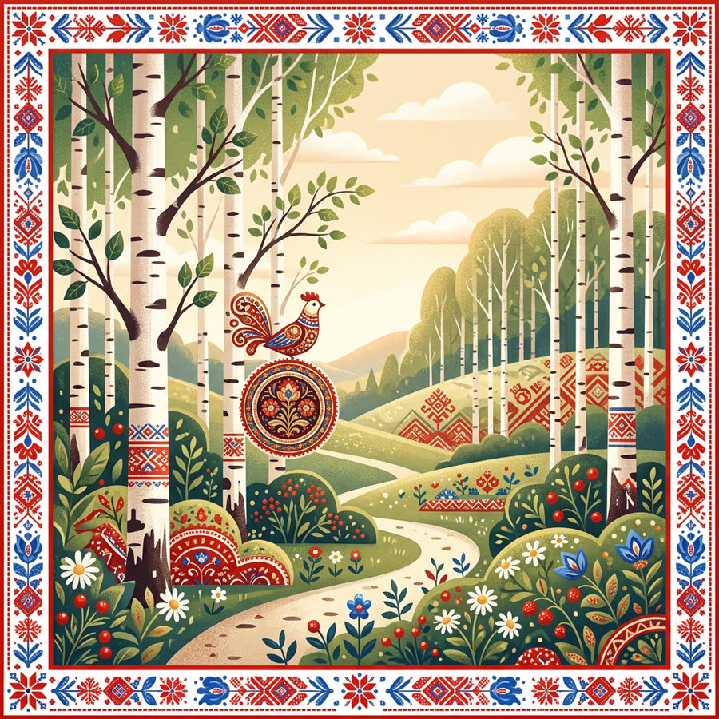

<style>
    :root {
      --bg: #08111f;
      --bg2: #0d1d32;
      --card: rgba(255,255,255,.08);
      --card2: rgba(255,255,255,.12);
      --line: rgba(255,255,255,.16);
      --text: #f6f1e7;
      --muted: rgba(246,241,231,.74);
      --gold: #ffd36b;
      --turq: #33e3dc;
      --red: #ff6b6b;
      --green: #78e08f;
      --shadow: 0 24px 70px rgba(0,0,0,.38);
      --radius: 28px;
    }
    * { box-sizing: border-box; }
    html { scroll-behavior: smooth; }
    body {
      margin: 0;
      background:
        radial-gradient(circle at 20% 0%, rgba(51,227,220,.18), transparent 33%),
        radial-gradient(circle at 80% 12%, rgba(255,211,107,.12), transparent 30%),
        linear-gradient(180deg, var(--bg), #09101c 42%, #0b1424);
      color: var(--text);
      font-family: Inter, system-ui, -apple-system, BlinkMacSystemFont, "Segoe UI", sans-serif;
      overflow-x: hidden;
    }
    a { color: inherit; text-decoration: none; }
    img { max-width: 100%; display: block; }
    .ethno-page { min-height: 100vh; }
    .ethno-section { width: min(1180px, calc(100% - 36px)); margin: 0 auto; padding: 86px 0; position: relative; }
    .eyebrow { display: inline-flex; align-items: center; gap: 9px; padding: 8px 13px; border: 1px solid var(--line); border-radius: 999px; color: var(--gold); background: rgba(255,255,255,.06); font-size: 13px; font-weight: 700; letter-spacing: .08em; text-transform: uppercase; }
    .eyebrow::before { content: ""; width: 8px; height: 8px; border-radius: 50%; background: var(--turq); box-shadow: 0 0 18px var(--turq); }
    h1, h2, h3, p { margin: 0; }
    h1 { font-family: "Playfair Display", serif; font-size: clamp(48px, 8vw, 102px); line-height: .92; letter-spacing: -.045em; max-width: 850px; }
    h2 { font-family: "Playfair Display", serif; font-size: clamp(36px, 5vw, 64px); line-height: 1; letter-spacing: -.035em; }
    .lead { color: var(--muted); font-size: clamp(17px, 2vw, 22px); line-height: 1.55; max-width: 720px; }
    .btn { display: inline-flex; align-items: center; justify-content: center; gap: 10px; border: 0; border-radius: 999px; min-height: 58px; padding: 0 28px; cursor: pointer; font-weight: 900; letter-spacing: .01em; color: #09101c; background: linear-gradient(135deg, var(--gold), #fff1b5); box-shadow: 0 16px 34px rgba(255,211,107,.22); transition: transform .2s ease, box-shadow .2s ease; }
    .btn:hover { transform: translateY(-2px); box-shadow: 0 22px 44px rgba(255,211,107,.3); }
    .btn.secondary { background: rgba(255,255,255,.08); color: var(--text); border: 1px solid var(--line); box-shadow: none; }

    .hero { width: min(1320px, calc(100% - 28px)); min-height: 760px; margin: 14px auto 0; border: 1px solid var(--line); border-radius: 36px; position: relative; overflow: hidden; background: #0b1728; box-shadow: var(--shadow); }
    .hero::before { content: ""; position: absolute; inset: 0; background: linear-gradient(90deg, rgba(8,17,31,.96), rgba(8,17,31,.68) 43%, rgba(8,17,31,.16)), url('assets/hero-unity.jpg') center/cover no-repeat; }
    .hero::after { content: ""; position: absolute; inset: 20px; border: 1px solid rgba(255,211,107,.28); border-radius: 26px; pointer-events: none; }
    .hero-inner { position: relative; z-index: 1; padding: clamp(34px, 7vw, 86px); min-height: inherit; display: flex; flex-direction: column; justify-content: center; gap: 30px; }
    .hero .actions { display: flex; flex-wrap: wrap; gap: 14px; align-items: center; }
    .scroll-note { color: var(--muted); font-size: 15px; }

    .section-head { display: flex; justify-content: space-between; align-items: flex-end; gap: 24px; margin-bottom: 34px; }
    .section-head .lead { max-width: 520px; }
    .slider-wrap { border: 1px solid var(--line); border-radius: var(--radius); background: linear-gradient(180deg, rgba(255,255,255,.09), rgba(255,255,255,.04)); box-shadow: var(--shadow); overflow: hidden; }
    .slider { display: grid; grid-template-columns: 1fr 1fr; min-height: 450px; }
    .slide-image { position: relative; min-height: 420px; background: #101e31; }
    .slide-image img { width: 100%; height: 100%; object-fit: cover; }
    .slide-image::after { content: ""; position: absolute; inset: 0; background: radial-gradient(circle at 80% 10%, rgba(255,211,107,.16), transparent 33%); }
    .slide-copy { padding: clamp(28px, 5vw, 56px); display: flex; flex-direction: column; justify-content: center; gap: 22px; }
    .slide-number { color: var(--gold); font-weight: 900; letter-spacing: .1em; text-transform: uppercase; font-size: 13px; }
    .slide-title { font-size: clamp(34px, 4vw, 58px); font-weight: 900; letter-spacing: -.04em; }
    .slide-fact { color: var(--muted); font-size: clamp(18px, 2vw, 24px); line-height: 1.45; }
    .slider-controls { display: flex; justify-content: space-between; align-items: center; padding: 18px; border-top: 1px solid var(--line); }
    .dots { display: flex; gap: 8px; }
    .dot { width: 9px; height: 9px; border-radius: 99px; background: rgba(255,255,255,.24); border: 0; cursor: pointer; transition: width .2s, background .2s; }
    .dot.active { width: 34px; background: var(--turq); }
    .round-btn { width: 46px; height: 46px; border-radius: 50%; border: 1px solid var(--line); background: rgba(255,255,255,.08); color: var(--text); font-size: 24px; cursor: pointer; }
    .small-note { margin-top: 16px; color: rgba(246,241,231,.62); font-size: 14px; text-align: center; }

    .timeline { display: grid; grid-template-columns: repeat(5, minmax(220px,1fr)); gap: 16px; overflow-x: auto; padding-bottom: 12px; }
    .time-card, .div-card { min-height: 245px; padding: 24px; border: 1px solid var(--line); border-radius: 24px; background: linear-gradient(160deg, rgba(255,255,255,.1), rgba(255,255,255,.045)); position: relative; overflow: hidden; }
    .time-card::before { content: ""; position: absolute; top: 24px; right: 24px; width: 14px; height: 14px; border-radius: 50%; background: var(--gold); box-shadow: 0 0 28px rgba(255,211,107,.7); }
    .time-card b, .div-card b { display: block; font-size: 22px; margin-bottom: 16px; }
    .time-card span, .div-card span { color: var(--muted); line-height: 1.55; }

    .diversity-grid { display: grid; grid-template-columns: repeat(3, 1fr); gap: 16px; }
    .div-card { min-height: 205px; transition: transform .2s, border-color .2s; }
    .div-card:hover { transform: translateY(-4px); border-color: rgba(51,227,220,.5); }
    .div-icon { font-size: 34px; margin-bottom: 18px; }

    .quote-band { width: min(1180px, calc(100% - 36px)); margin: 40px auto; padding: clamp(52px, 8vw, 94px); border: 1px solid rgba(255,211,107,.28); border-radius: 36px; background: radial-gradient(circle at 50% 0%, rgba(255,211,107,.16), transparent 38%), linear-gradient(135deg, rgba(255,255,255,.09), rgba(255,255,255,.035)); text-align: center; box-shadow: var(--shadow); }
    .quote-band blockquote { margin: 0; font-family: "Playfair Display", serif; font-size: clamp(34px, 5.5vw, 70px); line-height: 1.08; letter-spacing: -.035em; }

    .map-panel { display: grid; grid-template-columns: 1.3fr .7fr; gap: 22px; align-items: stretch; }
    .map { min-height: 560px; border: 1px solid var(--line); border-radius: var(--radius); background: radial-gradient(circle at 55% 45%, rgba(51,227,220,.2), transparent 20%), linear-gradient(140deg, rgba(255,255,255,.08), rgba(255,255,255,.035)); position: relative; overflow: hidden; box-shadow: var(--shadow); }
    .map svg { position: absolute; inset: 0; width: 100%; height: 100%; opacity: .6; }
    .marker { position: absolute; transform: translate(-50%, -50%); width: 23px; height: 23px; border-radius: 50%; border: 3px solid #09101c; background: var(--gold); box-shadow: 0 0 0 8px rgba(255,211,107,.18), 0 0 34px rgba(255,211,107,.8); cursor: pointer; }
    .marker.active { background: var(--turq); box-shadow: 0 0 0 10px rgba(51,227,220,.2), 0 0 38px rgba(51,227,220,.9); }
    .marker-label { position: absolute; top: 28px; left: 50%; transform: translateX(-50%); white-space: nowrap; background: rgba(8,17,31,.92); border: 1px solid var(--line); border-radius: 999px; padding: 6px 10px; font-size: 12px; }
    .map-info { border: 1px solid var(--line); border-radius: var(--radius); padding: 28px; background: linear-gradient(180deg, rgba(255,255,255,.1), rgba(255,255,255,.045)); display: flex; flex-direction: column; justify-content: center; gap: 18px; }
    .map-info h3 { font-size: 32px; letter-spacing: -.03em; }
    .map-info p { color: var(--muted); line-height: 1.55; font-size: 18px; }

    .quiz-box { display: grid; grid-template-columns: 1fr 300px; gap: 28px; align-items: center; padding: clamp(28px, 5vw, 56px); border: 1px solid var(--line); border-radius: 36px; background: radial-gradient(circle at 0% 0%, rgba(255,107,107,.16), transparent 34%), linear-gradient(135deg, rgba(255,255,255,.11), rgba(255,255,255,.045)); box-shadow: var(--shadow); }
    .quiz-box .lead { margin: 18px 0 26px; }
    .qr { width: 220px; aspect-ratio: 1; background: #fff; border-radius: 20px; padding: 16px; margin: 0 auto 14px; }
    .qr svg { width: 100%; height: 100%; display: block; }
    .qr-caption { color: var(--muted); text-align: center; font-size: 15px; line-height: 1.4; }
    .quiz-card { margin-top: 22px; display: none; border: 1px solid var(--line); border-radius: 22px; padding: 22px; background: rgba(0,0,0,.18); }
    .quiz-card.open { display: block; }
    .answer { display: block; width: 100%; text-align: left; margin-top: 10px; border: 1px solid var(--line); background: rgba(255,255,255,.07); color: var(--text); border-radius: 14px; padding: 13px 14px; cursor: pointer; }
    .answer.good { border-color: var(--green); background: rgba(120,224,143,.14); }
    .answer.bad { border-color: var(--red); background: rgba(255,107,107,.14); }
    .result { margin-top: 14px; color: var(--gold); font-weight: 800; }

    footer { border-top: 1px solid var(--line); padding: 36px 18px 48px; color: var(--muted); text-align: center; }
    footer a { color: var(--turq); border-bottom: 1px solid rgba(51,227,220,.45); margin: 0 8px; }

    @media (max-width: 900px) {
      .ethno-section { padding: 62px 0; }
      .section-head { display: block; }
      .section-head .lead { margin-top: 18px; }
      .slider, .map-panel, .quiz-box { grid-template-columns: 1fr; }
      .diversity-grid { grid-template-columns: repeat(2, 1fr); }
      .hero { min-height: 680px; }
      .map { min-height: 430px; }
    }
    @media (max-width: 560px) {
      .ethno-section { width: min(100% - 24px, 1180px); }
      .hero { width: calc(100% - 16px); border-radius: 24px; min-height: 620px; }
      .hero-inner { padding: 30px 22px; }
      .hero::before { background: linear-gradient(180deg, rgba(8,17,31,.96), rgba(8,17,31,.62)), url('assets/hero-unity.jpg') center/cover no-repeat; }
      .diversity-grid { grid-template-columns: 1fr; }
      .slider-controls { gap: 10px; }
      .quiz-box { padding: 24px; }
    }
  </style>
<main class="ethno-page" id="top">
    <section class="hero">
      <div class="hero-inner">
        <span class="eyebrow">Народы России</span>
        <h1>Единство в многообразии</h1>
        <p class="lead">Интерактивный маршрут по культурам, языкам, традициям и цифровому следу народов России.</p>
        <div class="actions">
          <a class="btn" href="#culture">Узнать, как мы устроены</a>
          <span class="scroll-note">Скролль → здесь нет скучных лекций</span>
        </div>
      </div>
    </section>

    <section class="ethno-section" id="culture">
      <div class="section-head">
        <div><span class="eyebrow">Культурный код</span><h2 style="margin-top:14px">5 народов — 5 цифровых фактов</h2></div>
        <p class="lead">Картинки и короткие факты: без энциклопедического кирпича, с нормальной скоростью чтения.</p>
      </div>
      <div class="slider-wrap">
        <div class="slider" id="cultureSlider">
          <div class="slide-image"></div>
          <div class="slide-copy">
            <div class="slide-number" id="slideNum">Слайд 1 / 5</div>
            <div class="slide-title" id="slideTitle">Русские</div>
            <p class="slide-fact" id="slideFact">Самая многочисленная культура. Именно русский язык стал «цифровым мостом» между всеми народами РФ.</p>
          </div>
        </div>
        <div class="slider-controls">
          <button class="round-btn" type="button" id="prevSlide" aria-label="Предыдущий слайд">‹</button>
          <div class="dots" id="sliderDots" aria-label="Навигация по слайдам"></div>
          <button class="round-btn" type="button" id="nextSlide" aria-label="Следующий слайд">›</button>
        </div>
      </div>
      <p class="small-note">5 из ≈190 народов. Каждый — отдельная вселенная. Вместе — одна страна.</p>
    </section>

    <section class="ethno-section" id="timeline">
      <div class="section-head">
        <div><span class="eyebrow">Лента времени</span><h2 style="margin-top:14px">Как это работало</h2></div>
        <p class="lead">Коротко: как общая страна собирала разные традиции в один социальный механизм.</p>
      </div>
      <div class="timeline">
        <article class="time-card"><b>Вече и община</b><span>Ещё до империи — традиция решать вопросы сообща. Это — ранний «социальный код».</span></article>
        <article class="time-card"><b>XVII–XIX века</b><span>Империя расширяется. Культуры не стираются — вплетаются в общую ткань управления.</span></article>
        <article class="time-card"><b>СССР</b><span>Единое образовательное и инфраструктурное пространство. Радио и ТВ становятся «общим разговором».</span></article>
        <article class="time-card"><b>1993 — Конституция РФ</b><span>Прямое закрепление: «Россия — многонациональный союз равных народов».</span></article>
        <article class="time-card"><b>Сегодня</b><span>Цифровые сервисы, госуслуги на языках народов РФ и общий культурный код в соцсетях.</span></article>
      </div>
    </section>

    <section class="ethno-section" id="diversity">
      <div class="section-head">
        <div><span class="eyebrow">Многообразие</span><h2 style="margin-top:14px">9 граней общего дома</h2></div>
      </div>
      <div class="diversity-grid">
        <article class="div-card"><div class="div-icon">🍲</div><b>Кухня</b><span>У разных народов — разные супы. Но «хлеб» уважают все.</span></article>
        <article class="div-card"><div class="div-icon">💃</div><b>Танец</b><span>Хоровод, лезгинка, осуохай — ритм разный, язык тела — общий.</span></article>
        <article class="div-card"><div class="div-icon">🧵</div><b>Костюм</b><span>Орнаменты отличаются. Уважение к традициям — нет.</span></article>
        <article class="div-card"><div class="div-icon">🪶</div><b>Ремёсла</b><span>Керамика, резьба, ковры — ручной труд сближает поколения и регионы.</span></article>
        <article class="div-card"><div class="div-icon">🗣️</div><b>Языки</b><span>В РФ — 155 языков. Конституция гарантирует их сохранение.</span></article>
        <article class="div-card"><div class="div-icon">🌲</div><b>Природа</b><span>Степи, тайга, горы, тундра — у каждого народа свой ландшафт, но общий дом.</span></article>
        <article class="div-card"><div class="div-icon">📖</div><b>Эпос</b><span>Былины, нартский эпос, олонхо — герои разные, ценности общие.</span></article>
        <article class="div-card"><div class="div-icon">🕊️</div><b>Религия и обычаи</b><span>Православие, ислам, буддизм, шаманизм — диалог, а не конфликт.</span></article>
        <article class="div-card"><div class="div-icon">📱</div><b>Цифровой след</b><span>Нацакценты в TikTok и VK: мемы сближают не хуже летописей.</span></article>
      </div>
    </section>

    <section class="quote-band" aria-label="Цитата">
      <blockquote>«Сила России — не в одинаковости,<br>а в умении быть разными, но вместе».</blockquote>
    </section>

    <section class="ethno-section" id="map">
      <div class="section-head">
        <div><span class="eyebrow">Карта</span><h2 style="margin-top:14px">Кликни по маркеру</h2></div>
        <p class="lead">У каждого региона — свой культурный и цифровой профиль.</p>
      </div>
      <div class="map-panel">
        <div class="map" aria-label="Интерактивная карта регионов">
          <svg viewBox="0 0 1000 620" aria-hidden="true">
            <path d="M47 274 C135 202 235 214 317 151 C395 92 486 142 559 103 C676 40 745 140 856 133 C934 129 970 194 939 282 C912 359 815 356 748 407 C658 475 593 404 496 468 C389 538 314 475 224 493 C126 512 67 443 62 357 Z" fill="rgba(51,227,220,.12)" stroke="rgba(255,255,255,.26)" stroke-width="3"/>
            <path d="M91 330 C214 295 273 333 374 283 C486 228 568 268 656 222 C755 170 830 221 916 208" fill="none" stroke="rgba(255,211,107,.3)" stroke-width="3" stroke-dasharray="8 10"/>
            <circle cx="500" cy="310" r="210" fill="none" stroke="rgba(255,255,255,.08)" stroke-width="2"/>
            <circle cx="500" cy="310" r="305" fill="none" stroke="rgba(255,255,255,.06)" stroke-width="2"/>
          </svg>
          <button class="marker active" style="left:37%;top:44%" data-region="kazan"><span class="marker-label">Казань</span></button>
          <button class="marker" style="left:48%;top:50%" data-region="ufa"><span class="marker-label">Уфа</span></button>
          <button class="marker" style="left:29%;top:58%" data-region="grozny"><span class="marker-label">Грозный</span></button>
          <button class="marker" style="left:78%;top:38%" data-region="yakutsk"><span class="marker-label">Якутск</span></button>
          <button class="marker" style="left:25%;top:39%" data-region="moscow"><span class="marker-label">Москва</span></button>
        </div>
        <aside class="map-info" id="mapInfo">
          <div class="slide-number">Татарстан</div>
          <h3>Казань</h3>
          <p>Цифровой билингвизм: два языка в госуслугах и публичной коммуникации.</p>
        </aside>
      </div>
      <p class="small-note">Кликни по маркеру — узнаешь цифровой профиль региона</p>
    </section>

    <section class="ethno-section" id="quiz">
      <div class="quiz-box">
        <div>
          <span class="eyebrow">Финальный квиз</span>
          <h2 style="margin-top:14px">А теперь проверь себя</h2>
          <p class="lead">«Единство в многообразии» — это не просто красивые слова. Это ежедневная практика миллионов людей.</p>
          <button class="btn" type="button" id="startQuiz">ПРОЙТИ КВИЗ →</button>
          <div class="quiz-card" id="quizCard">
            <b id="quizQuestion">Какой язык стал цифровым мостом между народами РФ?</b>
            <button class="answer" data-good="1">Русский</button>
            <button class="answer">Латинский</button>
            <button class="answer">Эсперанто</button>
            <div class="result" id="quizResult"></div>
          </div>
        </div>
        <div>
          <div class="qr" aria-label="QR-код для перехода к квизу">
            <svg viewBox="0 0 29 29" xmlns="http://www.w3.org/2000/svg">
              <rect width="29" height="29" fill="#fff"/><path fill="#07111f" d="M2 2h7v7H2zM4 4v3h3V4zM20 2h7v7h-7zM22 4v3h3V4zM2 20h7v7H2zM4 22v3h3v-3zM11 2h2v2h-2zM15 2h2v3h-2zM11 6h1v3h-1zM14 7h4v2h-4zM10 11h3v2h-3zM15 11h2v2h-2zM19 11h8v2h-8zM2 11h5v2H2zM8 14h4v3H8zM14 15h3v2h-3zM19 15h2v2h-2zM23 14h4v3h-4zM11 19h2v8h-2zM14 19h1v2h-1zM17 18h4v2h-4zM22 19h2v2h-2zM25 19h2v8h-2zM14 23h5v2h-5zM20 22h3v5h-3z"/>
            </svg>
          </div>
          <p class="qr-caption">Наведи камеру смартфона<br>Или перейди по кнопке выше</p>
          <p class="qr-caption" style="font-size:12px;margin-top:10px">QR-заглушка: в Tilda замените ссылку на опубликованный URL страницы с #quiz.</p>
        </div>
      </div>
    </section>
  </main>

  <footer>
    <div>Источники и полезные ссылки: <a href="https://culture.ru" target="_blank" rel="noopener">Культура.РФ</a> <a href="https://constitution.garant.ru" target="_blank" rel="noopener">Конституция РФ</a></div>
  </footer>

<script>
    const slides = [
      { title: 'Русские', img: 'assets/culture-russian.jpg', fact: 'Самая многочисленная культура. Именно русский язык стал «цифровым мостом» между всеми народами РФ.' },
      { title: 'Татары', img: 'assets/culture-tatar.jpg', fact: 'Второй по численности народ. Татарский язык — самый популярный национальный язык в российском интернете после русского.' },
      { title: 'Башкиры', img: 'assets/culture-bashkir.jpg', fact: 'Бортничество — древний промысел. Сегодня башкирский мёд — один из узнаваемых культурных брендов России.' },
      { title: 'Чеченцы', img: 'assets/culture-chechen.jpg', fact: 'Традиционное приветствие «Маршалла» означает мир и благополучие дому. Уважение к старшим закреплено и в обычаях, и в цифровых этических кодексах сообществ.' },
      { title: 'Якуты (Саха)', img: 'assets/culture-yakut.jpg', fact: 'Народ, который живёт в самом холодном регионе Земли. При этом у якутов — один из самых развитых IT-секторов на Дальнем Востоке.' }
    ];
    let currentSlide = 0;
    const slideImg = document.getElementById('slideImg');
    const slideNum = document.getElementById('slideNum');
    const slideTitle = document.getElementById('slideTitle');
    const slideFact = document.getElementById('slideFact');
    const dots = document.getElementById('sliderDots');
    function renderDots(){ dots.innerHTML = slides.map((_,i)=>`<button class="dot ${i===currentSlide?'active':''}" data-slide="${i}" aria-label="Слайд ${i+1}"></button>`).join(''); }
    function renderSlide(){ const s = slides[currentSlide]; slideImg.src = s.img; slideImg.alt = s.title + ' — культурная карточка'; slideNum.textContent = `Слайд ${currentSlide + 1} / ${slides.length}`; slideTitle.textContent = s.title; slideFact.textContent = s.fact; renderDots(); }
    document.getElementById('prevSlide').onclick = () => { currentSlide = (currentSlide - 1 + slides.length) % slides.length; renderSlide(); };
    document.getElementById('nextSlide').onclick = () => { currentSlide = (currentSlide + 1) % slides.length; renderSlide(); };
    dots.onclick = (e) => { if(e.target.dataset.slide){ currentSlide = Number(e.target.dataset.slide); renderSlide(); } };
    renderSlide();

    const regions = {
      kazan: { label: 'Татарстан', title: 'Казань', text: 'Цифровой билингвизм: два языка в госуслугах и публичной коммуникации.' },
      ufa: { label: 'Башкортостан', title: 'Уфа', text: 'Производство, сильная городская среда и сохранение эпоса «Урал-батыр».' },
      grozny: { label: 'Чечня', title: 'Грозный', text: 'Современная архитектура и традиционный адаб — этикет уважения в офлайне и онлайне.' },
      yakutsk: { label: 'Саха', title: 'Якутск', text: 'Полюс холода, сильная идентичность и IT-парк мирового уровня.' },
      moscow: { label: 'Столица', title: 'Москва', text: 'Место, где встречаются культуры, языки, кухни и цифровые сообщества всей страны.' }
    };
    const mapInfo = document.getElementById('mapInfo');
    document.querySelectorAll('.marker').forEach(btn => btn.addEventListener('click', () => {
      document.querySelectorAll('.marker').forEach(m => m.classList.remove('active'));
      btn.classList.add('active');
      const r = regions[btn.dataset.region];
      mapInfo.innerHTML = `<div class="slide-number">${r.label}</div><h3>${r.title}</h3><p>${r.text}</p>`;
    }));

    const quizCard = document.getElementById('quizCard');
    document.getElementById('startQuiz').onclick = () => quizCard.classList.toggle('open');
    document.querySelectorAll('.answer').forEach(answer => answer.addEventListener('click', () => {
      document.querySelectorAll('.answer').forEach(a => a.classList.remove('good','bad'));
      answer.classList.add(answer.dataset.good ? 'good' : 'bad');
      document.getElementById('quizResult').textContent = answer.dataset.good ? 'Верно. Русский язык стал общей цифровой средой общения.' : 'Не совсем. Правильный ответ — русский.';
    }));
  </script>
